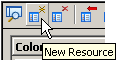
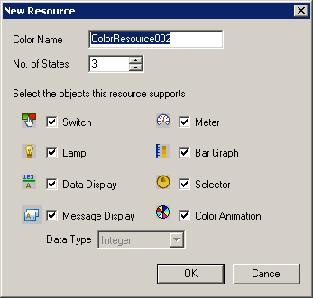
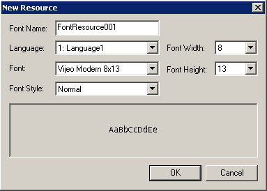
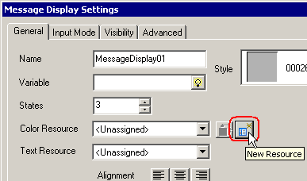
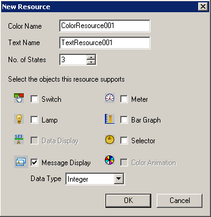

|
|
|
|
|
|
|
|
Resources create a common look and feel in your projects.
There are two ways to create resources:

The maximum number of resources you can have in each library is256.
Click the Resource Library node, then click Color, Text, Image or Font to display appropriate editor.
In the resource editor, click the New Resource icon to display the New Resource dialog box.
For steps on how to configure New Resource dialog box properties for color, text, or image resources, see Color/Text/Image: New Resource Dialog Box.
For steps on how to configure New Resource dialog box properties for font resources, see Font: New Resource dialog box.

|
Color |
|
 |
|
|
In the New Resource dialog box, define a name for the resource.
Select the number of states for this resource. The number of states should be either greater than or equal to the number of states for any part associated with the resource.
Select the check boxes of objects you want to associate with this resource. The selected objects change the states and properties defined by the resource.
When defining text or image resources and you select the Message Display or Image Display checkbox, also select the Data Type of variables used in the display.
Click OK to add the new resource. For information about configuring the resource, see Section 21.1.4, Working with Resources.

In the New Resource dialog box, define a name for the font resource.
Define the Font, Style, Height and Width.
If the application is set up with multiple languages, define font settings for each language.
Click OK to add the defined font resource to the Font Resource editor (see Section 21.1.3, Font Resource Editor).
Instead of defining resources in the resource editor, you can define resources when creating parts. You can create resources from part settings even after the part has been drawn, configured, and saved.
You may want to create resources from the part because the part gives you a better understanding of what the part will look like with the defined color, text, and image settings.
After creating a part, in the part settings dialog box, click the New Resource icon  beside the Color/Text/Image/Font Resource property. See the example from the Message Display Settings dialog box.
beside the Color/Text/Image/Font Resource property. See the example from the Message Display Settings dialog box.

The New Resource dialog box displays. See the example for a Message Display.

Define the resource settings as you would when creating the resource from the resource editor. See Color/Text/Image: New Resource Dialog Box or Font: New Resource dialog box.

If you create a resource after defining properties for the part, the properties in the new resource are populated with the state, color, and text information from the part.
If you are creating resources from a Message Display, both the color and text resource editors display when you close the New Resource dialog box.
If you are creating resources from an Image Display, the image resource editor displays when you close the New Resource dialog box.
When creating resources from a Switch, Lamp, Meter, Bar Graph, or Selector part, when you close the New Resource dialog box you're returned to the part settings dialog box and the new resource is added to the resource list box. If you change property settings in the dialog box, the change is also made to the resource.